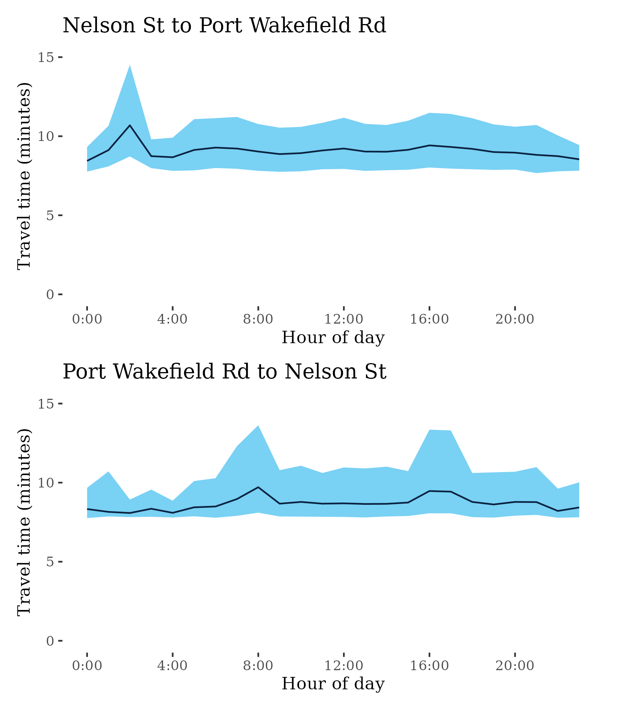

Congestion Report 2021
Congestion Report 2021Adelaide
The figure below shows all 9 selected Adelaide freight vehicle routes and an index of the METR across each route.
The figure below shows changes in the METRs and MEURs across each of the 9 selected Adelaide freight vehicle routes. Adelaide was alone amongst the 5 capital cities in showing a decrease in mean excess travel time between 2020 and 2021, but showed no distinct pattern across routes with several, including the highly weighted A2-M2, showing both an increase and decrease depending on travel direction.
Changes in travel time uncertainty showed fairly consistent falls with changes in the city wide measure driven by the A2-M2.
A14 – Port Road to Southern Expressway / Southern Expressway to Port Road
This surface route traverses Adelaide’s eastern suburbs and links Port Road (A7) at West Croydon in the north with the A13 at Darlington in the south. It passes Richmond near the Adelaide Airport and Plympton along the way. The route comprises several different roads including Holbrooks Road, Marion Road and Henley Beach Road.

| Direction | Best travel time | Longest median travel time | METR | Least uncertainty range | Most uncertainty range | MEUR | Distance |
|---|---|---|---|---|---|---|---|
| Port Road to Southern Expressway | 0:18:27 | 0:28:12 | 1.209 | 0:08:23 | 0:25:57 | 1.592 | 15.00 |
| Southern Expressway to Port Road | 0:21:10 | 0:25:12 | 1.081 | 0:09:15 | 0:16:07 | 1.444 | 15.04 |
The best median travel times and least uncertainty for journeys from Port Road to Southern Expressway were at 7am with a median travel time of 18 minutes and an interquartile range of 8 minutes. The longest median travel times and greatest uncertainty were at 3am with a median of 28 minutes and an interquartile range of 26 minutes.
The best median travel times and least uncertainty for journeys from Southern Expressway to Port Road were at 1am with a median travel time of 21 minutes and an interquartile range of 9 minutes. The longest median travel times were at 7pm with a median of 25 minutes and the greatest uncertainty at 4pm with an interquartile range of 16 minutes.
A15 – ANZAC Hwy to Port Road / Port Road to ANZAC Hwy
This route traverses the western suburbs of Adelaide between Glenelg and Queenstown-Alberton. Its northern sections run parallel to the A14 route (presented above), but passes west of Adelaide Airport. This route is also known as Tapleys Hill Road.
| Direction | Best travel time | Longest median travel time | METR | Least uncertainty range | Most uncertainty range | MEUR | Distance |
|---|---|---|---|---|---|---|---|
| ANZAC Hwy to Port Road | 0:13:30 | 0:18:46 | 1.163 | 0:02:11 | 0:09:08 | 2.771 | 13.06 |
| Port Road to ANZAC Hwy | 0:13:18 | 0:23:04 | 1.196 | 0:02:05 | 0:18:10 | 3.107 | 13.03 |
The best travel times and lowest uncertainty travelling from ANZAC Highway to Port Road were at 5am and 2am with a median travel time of 13.5 minutes and an interquartile range of 2 minutes. The longest median travel times were 19 minutes at 7pm and the greatest uncertainty were at 5pm with an interquartile range of 9 minutes
The best median travel times for journeys from Port Road to ANZAC Highway were 13 minutes at midnight and the lowest uncertainty was at midnight with an interquartile range of 2 minutes. The longest median travel times and greatest uncertainty were at 3am with a median of 23 minutes and an interquartile range of 18 minutes.
A16 – Hampstead Road to Outer Harbor / Outer Harbor to Hampstead Road
This route connects Port of Adelaide, at Outer Harbor, to north Adelaide at Hampstead Road (A17). It uses Grand Junction Road, Causeway Road and Semaphore Road and Victoria Road through the suburbs of Ethelton and Birkenhead.
| Direction | Best travel time | Longest median travel time | METR | Least uncertainty range | Most uncertainty range | MEUR | Distance |
|---|---|---|---|---|---|---|---|
| Hampstead Road to Outer Harbor | 0:24:59 | 0:32:23 | 1.081 | 0:10:01 | 0:29:30 | 1.515 | 20.74 |
| Outer Harbor to Hampstead Road | 0:23:32 | 0:29:15 | 1.134 | 0:09:09 | 0:18:31 | 1.523 | 20.80 |
The best median travel times for journeys from Hampstead Road to Outer Harbor were 25 minutes at 5am and the lowest uncertainty was at 5am with an interquartile range of 10 minutes. The longest median travel times were at midnight with a median of 32 minutes and the greatest uncertainty at 1am with an interquartile range of 29.5 minutes.
The best travel times and lowest uncertainty travelling from Outer Harbor to Hampstead Road were at 4am and 10pm with a median travel time of 23.5 minutes and an interquartile range of 9 minutes. The longest median travel times and greatest uncertainty were at 8am with a median of 29 minutes and an interquartile range of 18.5 minutes.
A17 – Grand Junction Road to South Eastern Freeway / South Eastern Freeway to Grand Junction Road
This route extends from the A16 (Grand Junction Road) south through Adelaide’s eastern suburbs to the junction of the South Eastern Freeway and Cross Road at Glen Osmond. The route traverses Hampstead Road, Ascot Avenue and Portrush Road along its length.
| Direction | Best travel time | Longest median travel time | METR | Least uncertainty range | Most uncertainty range | MEUR | Distance |
|---|---|---|---|---|---|---|---|
| Grand Junction to SE Freeway | 0:14:34 | 0:19:53 | 1.139 | 0:02:23 | 0:12:24 | 2.669 | 13.62 |
| SE Freeway to Grand Junction | 0:14:16 | 0:20:15 | 1.207 | 0:02:29 | 0:14:47 | 3.11 | 13.61 |
The best median travel times and least uncertainty for journeys from Grand Junction to the SE Freeway were at 4am with a median travel time of 14.5 minutes and an interquartile range of 2.5 minutes. The longest median travel times and greatest uncertainty were at 8am with a median of 20 minutes and an interquartile range of 12.5 minutes.
The best median travel times and least uncertainty for journeys from the SE Freeway to Grand Junction were at 3am with a median travel time of 14 minutes and an interquartile range of 2.5 minutes. The longest median travel times were at 4pm with a median of 20 minutes and the greatest uncertainty at 8am with an interquartile range of 15 minutes.
A20 – Grand Junction Road to Sturt Highway / Sturt Highway to Grand Junction Road
This route follows the A20 (comprising Main North Road and the Gawler Bypass) from Grand Junction Road at Gepps Cross north to the Stuart Highway near Gawler, and passes through Evanston Park, Blakeview, Elizabeth, Salisbury Park and Mawson Lakes.

| Direction | Best travel time | Longest median travel time | METR | Least uncertainty range | Most uncertainty range | MEUR | Distance |
|---|---|---|---|---|---|---|---|
| Grand Junction Road to Sturt Highway | 0:27:03 | 0:56:20 | 1.232 | 0:09:52 | 1:22:24 | 2.124 | 32.44 |
| Sturt Highway to Grand Junction Road | 0:29:32 | 0:39:44 | 1.095 | 0:12:42 | 0:47:51 | 1.434 | 32.62 |
The best median travel times and least uncertainty for journeys from Grand Junction Road to Sturt Highway were at 3am with a median travel time of 27 minutes and an interquartile range of 10 minutes. The longest median travel times and greatest uncertainty were at 1am with a median of 56 minutes and an interquartile range of 82 minutes.
The best median travel times and least uncertainty for journeys from Sturt Highway to Grand Junction Road were at 8pm with a median travel time of 29.5 minutes and an interquartile range of 13 minutes. The longest median travel times and greatest uncertainty were at 3am with a median of 40 minutes and an interquartile range of 48 minutes.
A22 – Park Terrace to Port Wakefield Road / Port Wakefield Road to Park Terrace
This route extends from Park Terrace at north Adelaide north to the Princes Highway (A1, Port Wakefield Road) at Gepps Cross. It uses Churchill Road and Cavan Road, crossing Grand Junction Road (A16) along its length.

| Direction | Best travel time | Longest median travel time | METR | Least uncertainty range | Most uncertainty range | MEUR | Distance |
|---|---|---|---|---|---|---|---|
| Park Terrace to Port Wakefield Road | 0:09:12 | 0:11:27 | 1.098 | 0:02:29 | 0:07:12 | 1.585 | 7.70 |
| Port Wakefield Road to Park Terrace | 0:08:42 | 0:13:19 | 1.191 | 0:02:59 | 0:09:38 | 1.799 | 7.64 |
The best median travel times for journeys from Park Terrace to Port Wakefield Road were 9 minutes at 5am and the lowest uncertainty was at 5am with an interquartile range of 2.5 minutes. The longest median travel times and greatest uncertainty were at 2am with a median of 11.5 minutes and an interquartile range of 7 minutes.
The best median travel times and lowest uncertainty for journeys from Port Wakefield Road to Park Terrace were at 6am with a median travel time of 9 minutes and an interquartile range of 3 minutes. The longest median travel times were at 4am with a median of 13 minutes and the greatest uncertainty at 6pm with an interquartile range of 10 minutes.
A3 – ANZAC Highway to SE Freeway / SE Freeway to ANZAC Highway
This route follows Cross Road (A3) between the ANZAC Highway (A5) and the South Eastern Freeway at Glen Osmond. It traverses Adelaide’s Southern Suburbs.
| Direction | Best travel time | Longest median travel time | METR | Least uncertainty range | Most uncertainty range | MEUR | Distance |
|---|---|---|---|---|---|---|---|
| ANZAC Highway to SE Freeway | 0:09:22 | 0:14:51 | 1.302 | 0:03:01 | 0:10:53 | 2.289 | 8.70 |
| SE Freeway to ANZAC Highway | 0:09:25 | 0:15:23 | 1.279 | 0:02:27 | 0:13:42 | 2.782 | 8.69 |
The best travel times and lowest uncertainty travelling from ANZAC Highway to the SE Freeway were at 3am and 5am with a median travel time of 9 minutes and an interquartile range of 3 minutes. The longest median travel times were at 4pm with a median of 15 minutes and the greatest uncertainty at 8am with an interquartile range of 11 minutes.
The best median travel times and least uncertainty for journeys from the SE Freeway to ANZAC Highway were at 4am with a median travel time of 9 minutes and an interquartile range of 2.5 minutes. The longest median travel times were at 5pm with a median of 15 minutes and the greatest uncertainty at 4pm with an interquartile range of 14 minutes.
A9 – Nelson St to Port Wakefield Road / Port Wakefield Road to Nelson St
This route traverses the light industrial areas on Adelaide’s northern fringe. It links Victoria Road and Nelson Street at Birkenhead and the Princes Highway (Port Wakefield Road, A1) at Mawson Lakes, and is an important link for freight from northern Adelaide to the port. It is known at different points on its route as the Port River Expressway and the Salisbury Highway.

| Direction | Best travel time | Longest median travel time | METR | Least uncertainty range | Most uncertainty range | MEUR | Distance |
|---|---|---|---|---|---|---|---|
| Nelson St to Port Wakefield Road | 0:08:26 | 0:10:41 | 1.075 | 0:01:33 | 0:05:48 | 1.87 | 10.23 |
| Port Wakefield Road to Nelson St | 0:08:05 | 0:09:43 | 1.073 | 0:01:03 | 0:05:32 | 2.777 | 10.20 |
The best median travel times and least uncertainty for journeys from Nelson Street to Port Wakefield Road were at midnight with a median travel time of 8.5 minutes and an interquartile range of 1.5 minute. The longest median travel times and greatest uncertainty were at 2am with a median of 11 minutes and an interquartile range of 6 minutes.
The best travel times and lowest uncertainty travelling from Port Wakefield Road to Nelson Street were at 2am and 4am with a median travel time of 8 minutes and an interquartile range of just over 1 minute. The longest median travel times and greatest uncertainty were at 8am with a median of 10 minutes and an interquartile range of 5.5 minutes.

A2-M2 – Main South Road to Port River Expressway / Port River Expressway to Main South Road
This route, the only Adelaide route in this report with motorway sections, traverses Adelaide north to south. It follows the A2 and the M2, from the Port River Expressway (A9) at Angle Park to the Main South Road at Noarlunga Downs. This route uses the Southern Expressway (M2), South Road (A2) and the North-South Motorway (M2). It does not include the Northern Connector opened in March 2020.

| Direction | Best travel time | Longest median travel time | METR | Least uncertainty range | Most uncertainty range | MEUR | Distance |
|---|---|---|---|---|---|---|---|
| Main South Road to Port River Expressway | 0:33:59 | 0:44:38 | 1.121 | 0:08:18 | 0:30:48 | 2.094 | 40.07 |
| Port River Expressway to Main South Road | 0:34:09 | 0:48:17 | 1.101 | 0:08:53 | 0:28:37 | 1.828 | 39.84 |
The best median travel times for journeys from Main South Road to Port River Expressway were 34 minutes at 5am and the lowest uncertainty was at 5am with an interquartile range of 8 minutes. The longest median travel times were at 7am with a median of 45 minutes and the greatest uncertainty at 8am with an interquartile range of 31 minutes.
The best travel times and lowest uncertainty travelling from Port River Expressway to Main South Road were at 4am and 5am with a median travel time of 34 minutes and an interquartile range of 9 minutes. The longest median travel times and greatest uncertainty were at 2am with a median of 48 minutes and an interquartile range of 28.5 minutes.